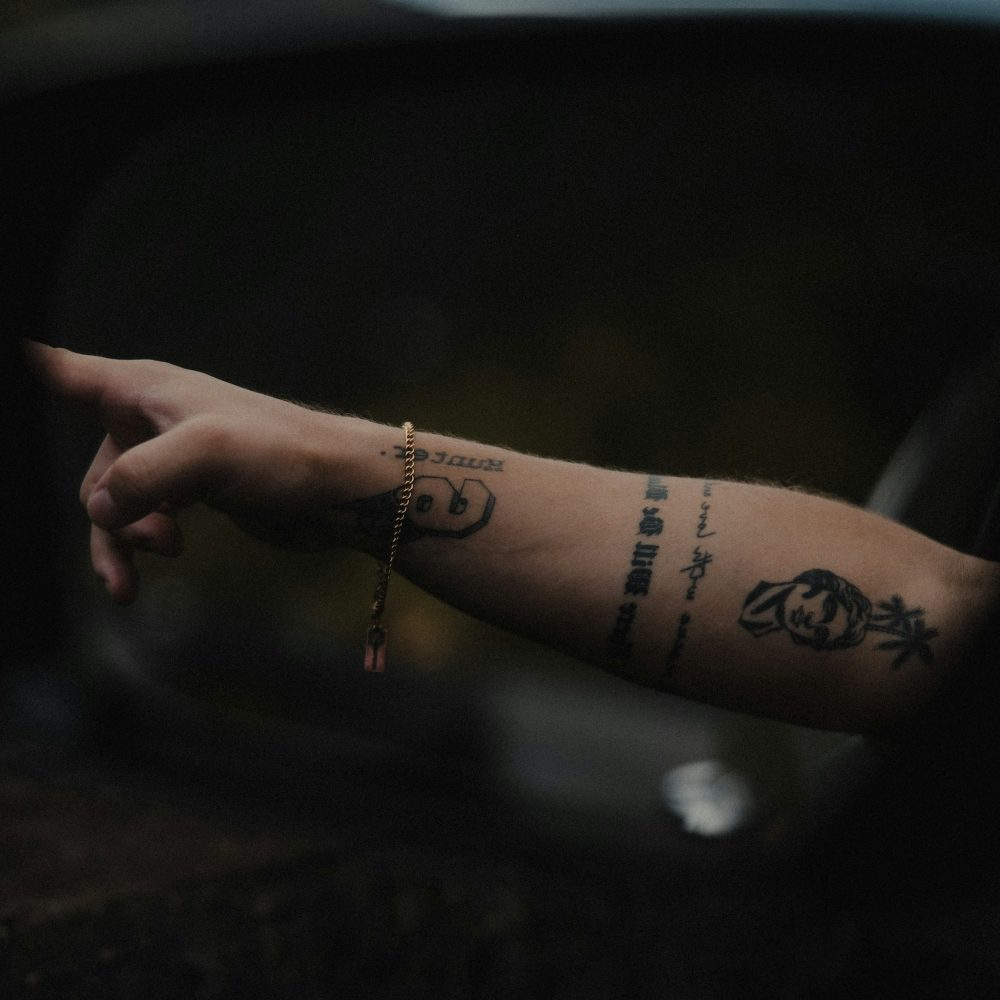
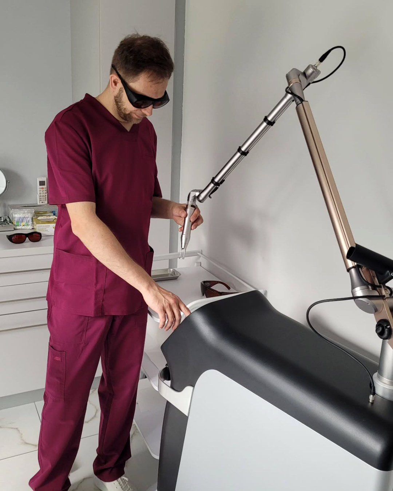
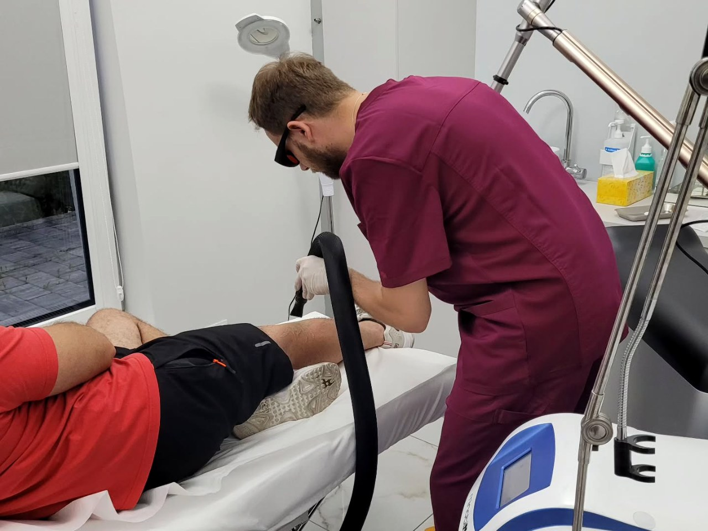
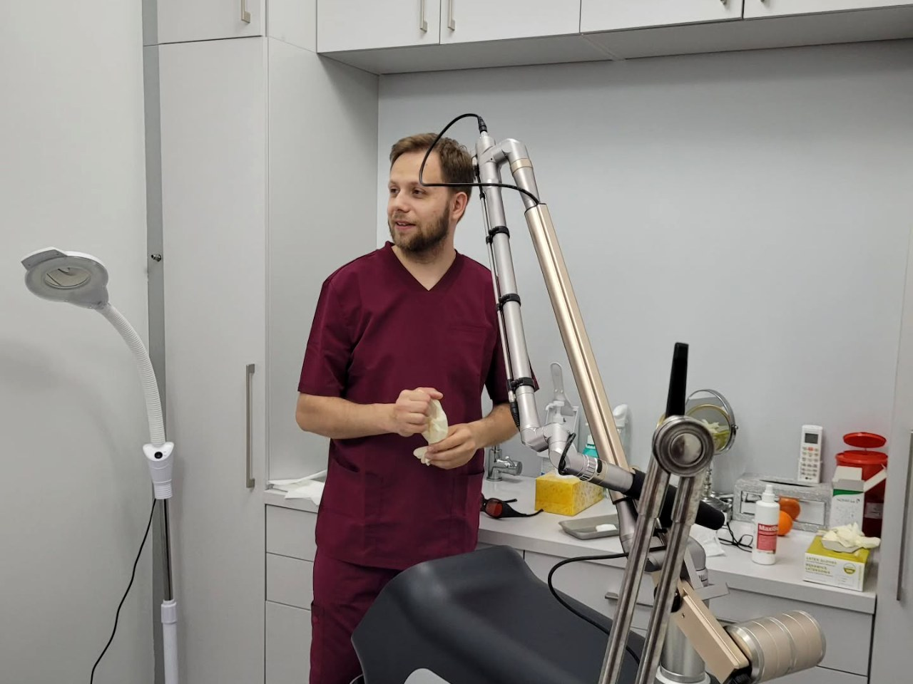
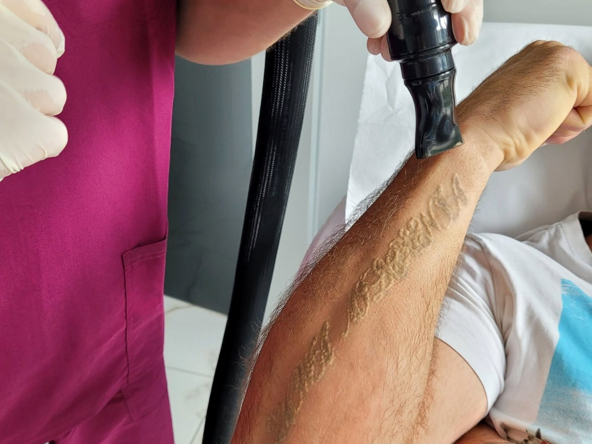
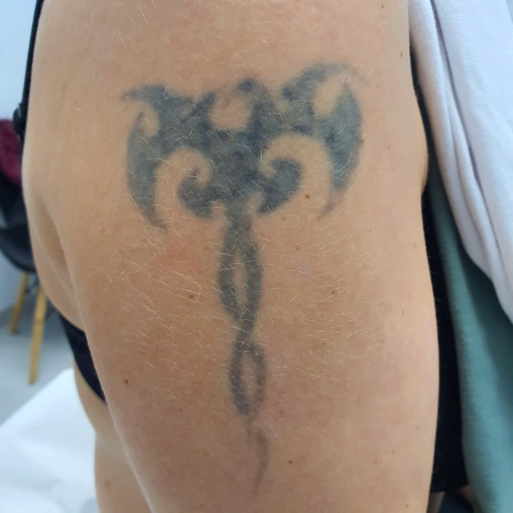
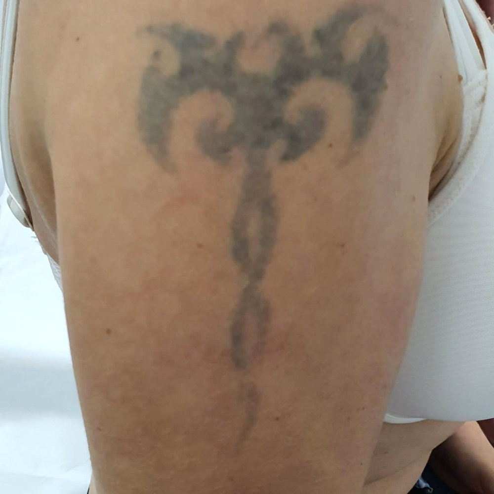
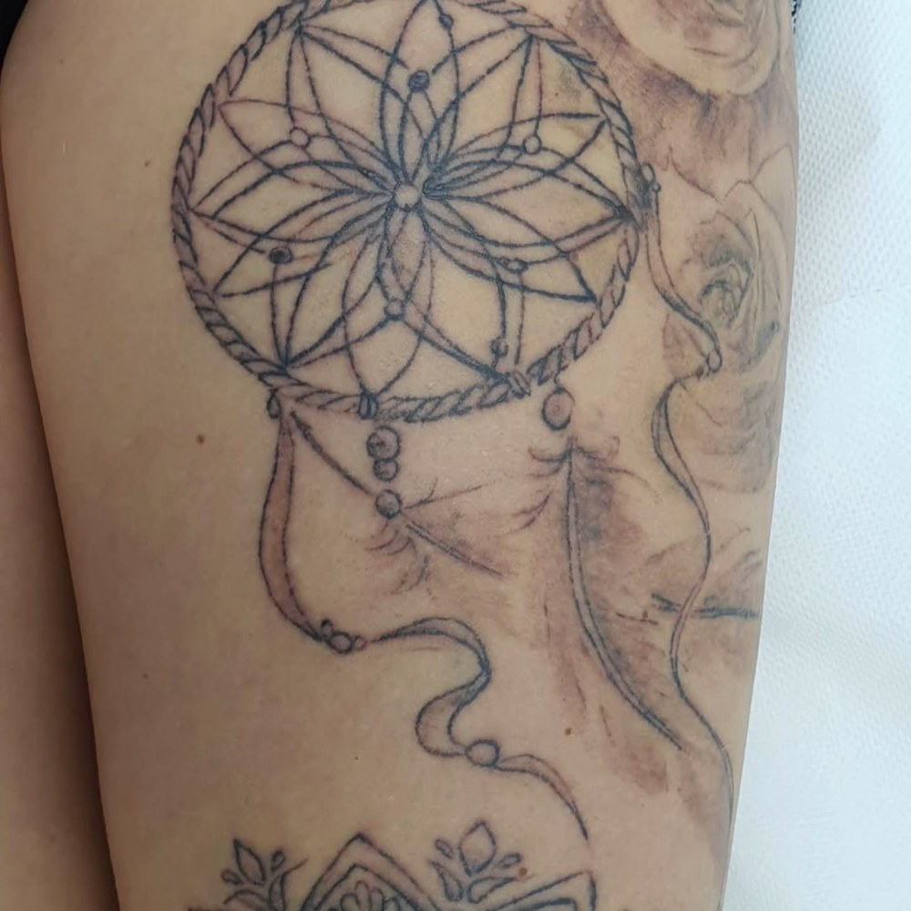
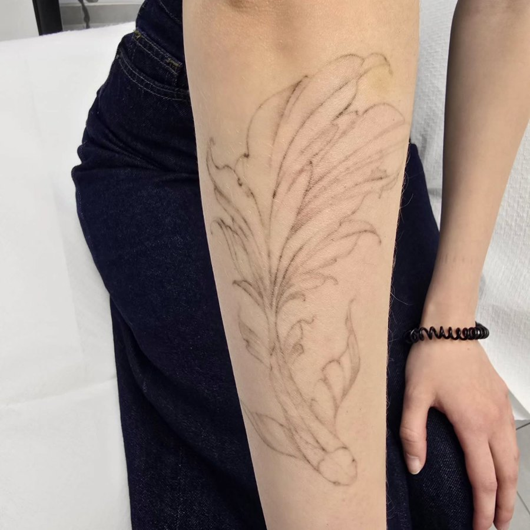
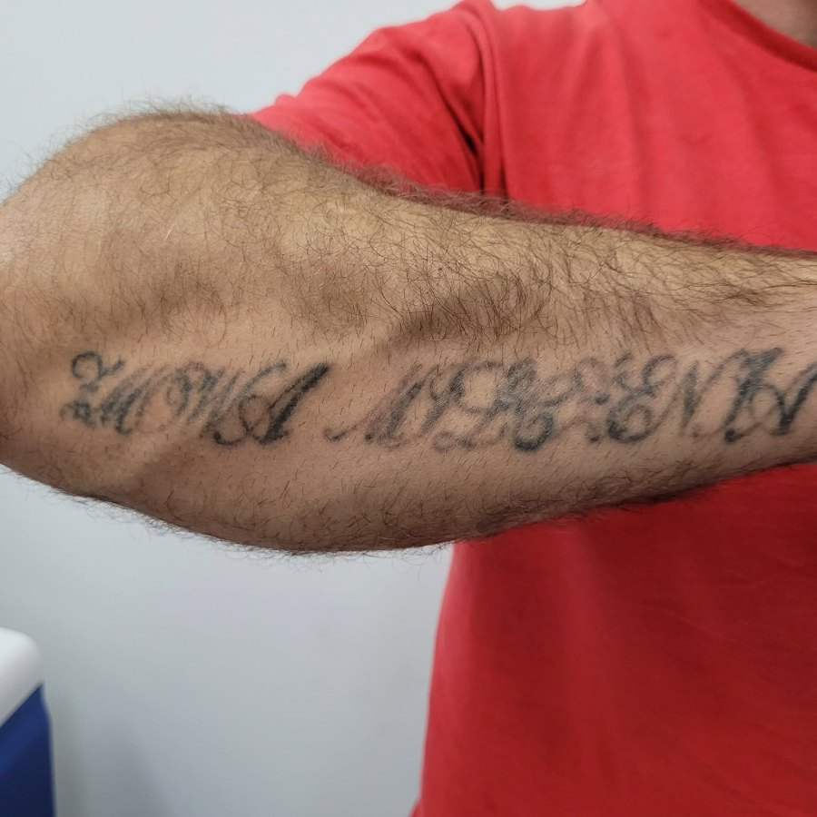

PRZEDBEFORE
PO · 6 SESJISESSIONS
6sesjisessions
9 mc.czastime
nadgarstekmiejscearea
Bezpieczne, etapowe usuwanie tatuaży laserem pikosekundowym. Bez pośpiechu, bez oceniania — w takim tempie, w jakim Ty potrzebujesz. Safe, gradual tattoo removal with picosecond laser. No rush, no judgment — at the pace your skin needs.
Kiedy zrobiłaś ten tatuaż, na pewno znaczył coś ważnego. Imię, datę, wiarę, że nigdy nie zmienisz zdania. Zmieniłaś — i to jest w porządku. Skóra ma prawo do drugich szans, tak samo jak Ty.
When you got this tattoo, it surely meant something. A name, a date, a belief you'd never change your mind. You did — and that's fine. Your skin deserves second chances as much as you do.
InkOff to studio laserowego usuwania tatuaży i PMU w Lublinie. Pracujemy z laserem pikosekundowym Pico-Q — najnowszej generacji, która rozbija pigment na cząsteczki tak małe, że ciało samo je usuwa.InkOff is a laser tattoo & PMU removal studio in Lublin. We work with the Pico-Q picosecond laser — the latest generation, breaking pigment into particles fine enough for your body to remove on its own.
Każdy zabieg prowadzi osobiście Krzysztof Łuckiewicz — ta sama osoba na konsultacji, przy laserze i przy kontroli. Nie zaczynamy od ceny ani od planu. Zaczynamy od rozmowy.Every treatment is performed personally by Krzysztof Łuckiewicz — the same person at the consult, at the laser and at the check-up. We don't start with price or a plan. We start with a conversation.
Każda osoba dostaje pisemny plan. Płacisz dopiero po pierwszej sesji.Every client gets a written plan. You pay only after the first session.
30 minut przy herbacie. Ocena pigmentu, fototypu skóry, historii tatuażu. Test plamki na małym fragmencie. Bez zobowiązań i opłat.30 minutes over tea. Pigment, skin phototype, tattoo history. A small patch test. No commitment, no fee.
Pisemny dokument: ile sesji, jakie odstępy, jaki koszt. Zabierz go do domu, wróć kiedy będziesz gotowa.A written brief: sessions, intervals, total cost. Take it home. Come back when ready.
Pikosekundowy Pico-Q. 15–45 min. Po sesji — zimne okłady, maść, czas. Następna sesja za 6–8 tygodni.Pico-Q picosecond laser. 15–45 min. After — cold compress, ointment, time. Next in 6–8 weeks.
Indywidualna instrukcja, zdjęcia kontrolne, kontakt na WhatsApp. Bez głupich pytań.Personalised instructions, check-up photos, WhatsApp line. No dumb questions.




Krótki, kontrolowany impuls rozbija tusz pod skórą. Zabieg trwa od kilkunastu minut, a głowicę chłodzi powietrze, żeby skóra wokół pozostała bezpieczna.A short, controlled pulse shatters the ink beneath the skin. A session takes minutes, and the handpiece is air-cooled so the surrounding skin stays safe.
Każde zdjęcie z dokładnym opisem: ile sesji, jaki tatuaż, jaki czas.Each photo with full notes: sessions, type, time elapsed.





Cena zależy od powierzchni, koloru i ilości tuszu. Pakiety są tańsze.Price scales with surface, color, density. Packages cost less.
„Nie usuwamy przeszłości.
Robimy miejsce."
"We don't erase the past.
We make space."
Nie wymyślamy opinii.We don't make up reviews.
Przeczytaj, co o nas piszą nasi klienci — prosto z Booksy, Google i Facebooka.Read what our clients write about us — straight from Booksy, Google and Facebook.
@inkoff.pl · zobacz nasze realizacjesee our work

Jeśli Twojego nie ma — napisz. Odpowiadamy w 24h.If yours isn't here — write. We reply within 24h.
Bardziej niż robienie tatuażu, krócej. Większość klientów porównuje to do strzelenia gumką w skórę. Stosujemy chłodzenie i krem znieczulający.More than getting it done, but shorter. Most compare it to a rubber-band snap. Cooling and topical numbing on demand.
Średnio 4–8 zależnie od koloru, głębokości tuszu i fototypu skóry. Konkretną liczbę podajemy po teście plamki.Typically 4–8, depending on color, depth, skin type. We tell you exactly after a patch test.
Pikosekundowy Pico-Q rozbija pigment, nie spala skóry. Przy zaleceniach po zabiegu blizn nie ma.Pico-Q shatters pigment, doesn't burn skin. With proper aftercare — no scarring.
Trzy długości fali. Usuwamy czarny, czerwony, zielony, niebieski. Najtrudniejsze są neonowe i białe.Three wavelengths. Black, red, green, blue. Hardest are neons and whites.
Decyduj na etapie III, gdy widać 50% efektu. Wielu klientów po 3 sesjach idzie do tatuatora po cover-up — to znacznie łatwiejsze.Decide at stage III when 50% is gone. Many do a cover-up over a "softer canvas" — much easier work.
Lublin, ul. Sierpniowa 29 — z dogodnym dojazdem i parkingiem.Lublin, Sierpniowa 29 — easy to reach, parking on site.
Konsultacja trwa 30 minut. Jest bezpłatna i niezobowiązująca.The consult takes 30 minutes. Free, no commitment.